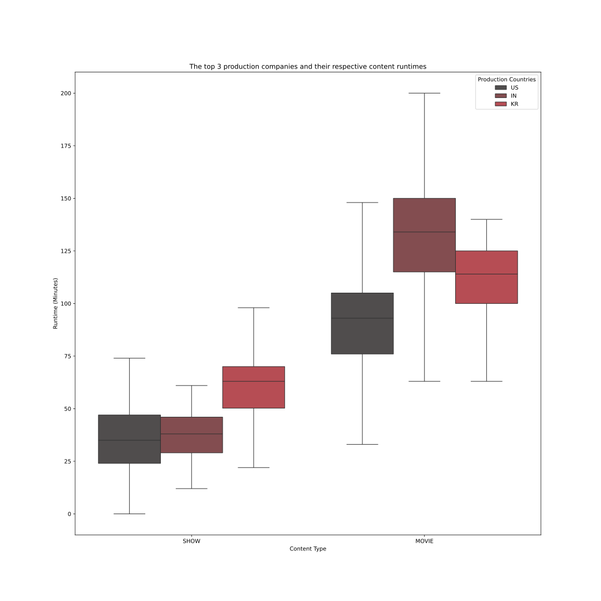

Data Visualization: How are Countries Different in Netflix Movies and
Shows Productions?
Group 15: Joseph Trisnandi, Khanh Nguyen, I Man Liu
Overall Introduction
In the ever-evolving landscape of entertainment, streaming platforms have
become the go-to destination for a diverse range of content. Among these,
Netflix is a popular platform that provides a wide collection of TV series
and movies to suit the diverse tastes of its global audiences. In this
project, we want to analyze a collection of TV series and movies provided
by a Netflix dataset, aiming to uncover the connection between production
origins and their released Netflix TV shows and movies.
More specifically, for every country in the dataset, we would like to find
out its movies & TV show split, the trend in the number of released
content each year, the correlation between IMDB votes and IMDB scores, and
so on. Through these data visualizations, we can compare between different
countries. Hence, we can find the answer to the question of how TV shows
and movies on Netflix produced by different countries differ in terms of
attributes such as their show type, genres, IMDB score, IMDB votes, and so
on.
The data we gathered comes from one source on Kaggle:
Netflix TV Shows and Movies. Movies which has two files titles.csv and credits.csv, but we will only
use titles.csv. It has 5850 rows and 15 features. This data set was
created to list all movies and shows available on Netflix streaming, and
analyze the data to find interesting facts. As of the recentness of data,
the data was acquired in July 2022 containing data available in the US and
it was lastly updated a year ago. Using the raw data, we have engineered
some additional features to easily represent them using visualization
libraries. We also added
Natural Earth Countries
data and merged with our existing dataframe. The information about the
features that were used in this visualization are listed in the following
table:
Variable Name
Details
Country
Country name
geometry
Geometry of country for drawing of map
type
Type of content
release_year
Release year of content
runtime
Runtime of content
genres
Geners of content (list)
production_countries
Production countries that produced content (list)
imdb_votes
Number of IMDB votes for content
imdb_score
IMDB score of content
Overall Map
Interaction Guide:
Following is an interactive visual representation for the whole world. By
zooming in or hovering over the map, users can explore details about each
continent and country. The 2 color layers indicate the average show
runtime and average movie runtime of each country. When click on a
country, additional information about other factors related to movies and
shows produced in that country will be revealed.
To generate the overall data visualization, our group created a new
dataframe that generalizes all the movies and shows in the dataset. For
every country, we calculate the total number of shows, total number of
movies, average show runtime, average movie runtime, average imdb score,
average imdb votes and so on so that the readers can get some general
information about a specific country.
When analyzing the overall map, we observe distinct patterns that most of
Europe, Asia, and parts of Africa have higher average shows and movies
runtimes, with movies averaging between 97 to 114 minutes and shows
between 37 to 60 minutes. On the other hand, most of North and South
America tend to have lower average shows and movies runtimes, ranging from
20 to 97 minutes for movies and 3 to 37 minutes for shows. As you clicked
on each of the country in the continent, you will explore more of Netflix
Movies and Shows Productions information such as the latest movies release
year, average imdb score, average tmdb popularity, etc. However, it's also
worth noting that some countries like Belarus and Algeria have null
average show or movie runtime because there are no shows or movies
produced by them on Netflix.
This overall data visualization helps us understand the difference in
average show and movie runtimes in different countries. Moreover, their
more detailed information shown in tooltip helps us understand the
diversity in Netflix content production across different regions. It
highlights regional preferences and trends in show and movie runtimes,
providing insights into cultural and entertainment preferences worldwide.
Users can gain a deeper understanding of how Netflix content varies
globally, enriching their knowledge of international media landscapes.
Static Visualization
Distribution of Shows and Movies on Netflix Across Various Countries
Shows
|
Movies
The stacked bar plot above illustrates the distribution of shows and
movies across various countries on Netflix, utilizing a color scheme
reminiscent of Netflix's branding to enhance clarity and user
interpretation. The red bars represent the proportion of shows, while
the black bars depict the proportion of movies. With a total of 109
bars, each corresponding to a distinct country, the plot serves as a
comprehensive overview of countries show and movie production patterns.
Notably, the plot reveals intriguing insights into the content offerings
of different countries. Some countries, such as Ghana and Burkina Faso,
all of their content on Netflix are movies. On the other hand, countries
like Belarus and Croatia are the total opposite with only shows and no
movies. Moreover, a significant observation emerges from the large
number of black bars, signifying that on the Netflix platform, movies
are more prevalent than shows across a greater number of countries.
Delving deeper, noticeable disparities in content distribution are
apparent among prominent nations. For instance, while the United States
predominantly showcases movies, Japan and South Korea lean towards a
surplus of TV shows. These variations reflect unique cultural
preferences and production trends within each country's entertainment
industry.
In conclusion, the stacked bar plot illuminates the diverse landscape of
content distribution on Netflix, highlighting regional preferences and
industry dynamics, and underscoring the importance of countries to cater
to diverse audience preferences in the global market.
Runtimes of Content Types Box Plot

This side-by-side boxplot was created using the Seaborn library. The
chart effectively visualizes the differences in production runtimes
across the content types and the three production countries
represented. This allows for easy comparison and insight of country
tendencies in the data.
A key observation is that movie production generally has a higher
runtime compared to shows. Moreover, there is a broader distribution
of runtimes for movies than for shows, with Indian-produced movies
displaying the widest range, spanning from 60 to 200 minutes.
Additionally, Indian-produced movies also have the longest median
runtimes of around 135 minutes. On the other hand, the Korean-produced
shows have the longest runtimes, with a median around 60 minutes, with
a lower quartile of 50 minutes, longer than the upper quartile of US
and Indian show runtimes.
IMDB Votes vs. IMDB Score of Top 3 Countries Scatter Plot
This scatter plot compares the IMDB votes and IMDB scores for the top
3 countries - India, South Korea, and the United States of America.
The plot shows a clear positive correlation between IMDB votes and
IMDB scores, indicating that movies with more votes tend to have
higher ratings. However, the relationship is not perfectly linear, as
there is considerable scatter in the data points. From the plot, it
appears that the movies from the United States have the highest
concentration of data points and cover the widest range of IMDB votes
and scores compared to the other two countries. South Korea and India
have fewer data points, but their movies still span a wide range of
IMDB votes and scores.
The main cluster of data points is centered on the left range of IMDB
votes (0 to 800,000) and the middle range of IMDB scores (between 2.0
and 9.5). There are several outliers with extremely high IMDB vote
counts (above 2,000,000) with high IMDB scores around 8.5-9.5. These
may be very commercially successful movies that also received high
critical acclaim.
Interactive Visualization
Content Genres and Release Year Line and Bar Charts
Interaction Guide:
For this interactive visualization, you are able to select any one of the
top 3 countries using the dropdown box to observe the trends of the number
of releases of each country per year. You are also able to select between
blocks of time by clicking and dragging on the graph to observe the number
of each genre types released during that block of time.
This graph, created using the Altair library, displays the number of
content releases (movies and shows) over time by the top 3 production
countries: the US, Korea and India. The line graph shows a steady, gradual
increase from the 1940s to the late 1990s, followed by a sharp, almost
vertical rise in the past two decades. The observed trends may be
influenced by various factors, such as advancements in technology, the
rise of streaming platforms, changes in consumer demand, and shifts in the
entertainment industry landscape. The graph differentiates between movie
and show releases, with the movie line (in black) and the show line (in
red) exhibiting distinct patterns. Despite the overall surge in content
releases, a slight retraction is evident beginning around 2020, which may
be attributed to the outbreak of the coronavirus pandemic. Furthermore, an
analysis of the most and least popular genres among the top three
production countries reveals that drama and comedy content are the most
popular, whereas genres such as western, war, and sports exhibit
comparatively lower popularity levels.
Countries Partnership Network
Interaction Guide:
To explore the network further, you can zoom in or click on specific nodes
(points/dots) to see the names of countries. You can also investigate the
edges (lines), which depict the connections, engagements, and interactions
of that country with other countries. Clicking on an edge provides a
clearer view of the connection between two specific countries, with the
thickness indicating the frequency of interaction between them.
The network visualized by the Folium library illustrates collaborations
between countries in producing movies and shows available on Netflix. Each
edge between two countries signifies a collaborative effort in creating
content. Notably, certain countries exhibit high degrees within the
network, indicating extensive collaborations with numerous other
countries. France, Great Britain, and the USA stand out prominently in
this regard, suggesting that the movies and shows produced by these
nations often involve partnerships with a diverse range of international
counterparts.
Of particular interest is the thickness of edges, which reflects the
frequency of collaborations between pairs of countries. The thicker the
edge, the more frequent the collaborations. For instance, the connection
between Great Britain and the USA appears noticeably thicker compared to
others, indicating a robust history of joint productions between these two
countries. Overall, the network appears dense, indicating a widespread
network of collaborations among countries in the film and television
industry. However, there are outliers, such as KN (Saint Kitts and Nevis)
and LK (Sri Lanka), with a low degree of one, suggesting low collaborative
engagements with other countries. The countries with low degree are
located on the edge whereas the countries with high degree are located
more in the center of the network.
Analyzing this network provides valuable insights into the global dynamics
of content creation and collaboration in the entertainment industry. It
highlights the interconnectedness of countries in producing diverse and
culturally rich content for platforms like Netflix, while also
underscoring the varied levels of engagement among different nations.
Conclusion
Based on our static visualizations, we have noted that, on average, shows
tend to have longer runtimes than movies. Furthermore, our analysis
reveals that the United States receives the highest number of IMDB votes
compared to India and Korea, indicating a potentially larger audience
reach. Also, There are more movies than shows on Netflix in the data we
use. There are some countries like the US whose number of movies is larger
than the number of shows, whereas some other countries like Korea whose
number of shows is more than the number of movies. We assume that the type
they produce depends on the interest of the main audience. These insights
shed light on the diverse preferences of global audiences and how Netflix
adapts its content offerings to cater to these preferences on a
country-by-country basis.
From our data visualizations, we conclude that the US, Korea, and India
are the top three origins of movies and shows available on Netflix. Using
the data of the top production countries, we found that popularity via the
number of IMDB votes led to higher IMDB scores. Outside of those top
countries, France and Great Britain had the most collaborative productions
around the globe. The three most common genres on Netflix are drama,
comedy, and thriller, with a sharp increase of content throughout from
2010s.
For our future work, we will keep monitoring and collecting more recent
data to have a more accurate understanding and visualizing of the shows
and movies produced across different countries.
*Conclusions are made solely based on the Netflix dataset, meaning that we
can’t generalize for all movies and shows available outside Netflix.